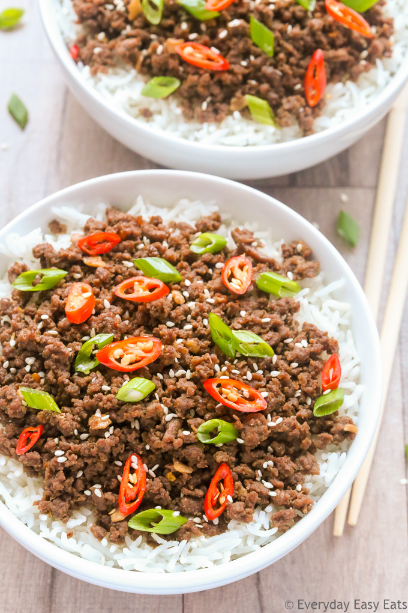

Asian Themed Meal Prep Idea

Description
Follow along with us to make your lunch for the week that includes tasty asian flavored beef, brocolli, and jasmine rice!
Ingredient List
- 1 pack of 95/5 grass fed ground beef
- 4 cups of brocolli crowns steamed
- 4 garlic cloves minced
- 1/4 cup packed brown sugar
- 1/4 cup soy sauce
- 2 teaspons sesame oil
- 1/2 teaspon ground ginger
- 1/2 teaspon crushed red pepper
- 4 cups white rice cooked
Directions
- Cook ground beef
- Prepare sauce
- Steam rice and brocolli
- Pour over beef
- Assemble bowls
- Add beef
- Add brocolli
- Seal and Store